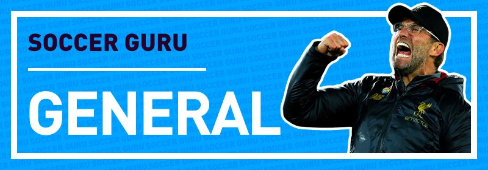

Getting started with Soccer Guru
A one-stop for all general Soccer Guru related questions ranging from setup to troubleshooting and what to expect from the bot in your server.

Setting up Soccer Guru
How do I invite the Soccer Guru bot?
The bot can be invited to your server using the following link.
How do I set up the Soccer Guru bot?
There is no setup required. Once the bot joins the server you chose and you have given it the required permissions, you can start using the bot by running the /claim command, which will give you a random card every hour that it is run.
After you manage to get 11 players, you can add them to your starting 11, by running /11 add <player name>, and you'll be able to play games in /arena or against friends /friendly <user>. Your starting 11 can be viewed by running /11 show.
Further commands can be shown using the /help command.
How can I make the bot work in specific channels?
To restrict the bot from showing up in other channels, you need to ask a user in your server with Manage Server permissions, or an Administrator user. You need to tell such a user to go to Server Settings -> Integrations -> Soccer Guru and assign the necessary permission from that window. This can be done by disabling All Channels and enabling the channels where you want the bot to respond.
How can I set up the bot to work with sg! (prefix) like before?
Prefixes are no longer supported on Discord. You have to use slash commands (/).
Alternatively, you can mention the bot and the command after it, that is, @Soccer Guru#6185 <command>. For example, @Soccer Guru#6185 claim.
Why doesn't the bot work on my server?
With the introduction of slash commands, the bot will no longer respond to prefixed commands (default: sg!). This was not a decision taken by us, but a rule enforced by Discord on all bots.
If the bot is no longer working on your server, then it is recommended that you try re-inviting the bot - this will ensure your server has access to slash commands. The bot can be invited to your server using this link.
Long-term support will remain for commands prefixed with a bot mention - @Soccer Guru
Commands
Why is a certain command not working?
It is recommended that you use /help. and view the correct usage of the command, especially to see if you are inputting the correct parameters. Alternatively, you can check the Commands page, which includes all commands usage.
If the problem persists, you can ask for assistance from the Support Server.
Why was the rob command removed?
Due to multiple reports from users in the server reporting other users of harassment or targeting them, we decided to remove the command. The other reason is that it's a feature where the targeted user cannot do anything to avoid getting robbed; it was out of their control.
Voting
How do I vote for Soccer Guru to earn cards, credits, and XP?
You can vote on Top.gg to support the bot and receive such rewards. You can also vote on Discord Bot List site to earn two cards.
How long does it take for a voting streak to reset?
It takes 30 hours after the vote is processed. This means that you can vote every 12 hours (cooldown/ reminder). Thus, you only have a 30-hour window frame to vote again before losing your voting streak.
Example:
- – Day 1 - You vote at 08:00
- – Day 1 - Vote ready at 20:00 (12 hours passed) - you can vote
- – Day 2 - Vote expires at 14:00 (30 hours passed) - if no vote is received again in 30 hours the streak will reset.
Does voting on both sites affect my streak or rewards?
No, by voting on Discord Bot List, you are only getting two cards; votes on Discord Bot List do not have any effect on the streak, or rewards.
Can I set Discord Bot List as the primary site for voting?
No, you cannot choose which site you want as your primary voting site, Discord Bot List is an extra incentive for those who are willing to vote on both sites. Top.gg is the main one.
What are the maximum cards I can get from my vote streak?
The maximum is five cards; below is a list of the rewards based on the vote streak:
- – 0-2 vote streak = 2 cards
- – 3-7 vote streak = 3 cards
- – 8-20 vote streak = 4 cards
- – 21+ vote streak = 5 cards
Note: After you reach a voting streak of 21, you start getting 20 additional credits towards the final bonus reward incrementally. Thus, your credit bonus will keep on increasing until you reach a 951 vote streak, at which point a credit reward cap of 20,000 is set.
Why is top.gg/ DBL not working?
If you follow the below steps, it's a guarantee that your vote will be processed (these steps are not bound to voting on a desktop PC only; it's guaranteed to work without any issues on mobile devices as well);
- 1/ Open your browser
- 2/ Incognito/ Private window (or clear the cache of your browser)
- 3/ In the address bar search for Soccer Guru / Search for Soccer Guru directly on top.gg (skip to (5))
- 4/ Click on the top.gg site search result (Add Soccer Guru Discord Bot | The #1 Discord Bot List)
- 5/ Click the 'Vote' (^) button (Next to the Invite this bot button)
- 6/ Click on the 'Login to vote' button
- 7/ Sign in with your Discord credentials
- 8/ Click 'Authorise'
- 9/ Click 'Vote'
There will be no issues if you access the top.gg site via Incognito/ Private window. The reason is that cache would be playing its part which sometimes prevents ads/functionality to load.
Note: If you vote and do not receive your cards, it is recommended to check the #votes channel to see whether the vote reached the bot. If you see that the vote was received, it is recommended that you check if you have your DM's disabled, if they are disabled, the players are still sent to you, but you will not be able to see who you received since the DM's were disabled (the cards are still sent to you (/club)).
Why am I not receiving any vote reminders from Soccer Guru?
Check that when you run /toggleVoteReminder it shows that it is set to True. If you run the command and it says False it means that they are disabled.
On the other hand, if it is True, and you still do not receive the cards or the voting reminder, then it means that you have your DMs disabled. The cards will still be sent to you when you vote, but since you have your DMs disabled, you won't be able to see which cards you received, so make sure your DMs are enabled. Regardless of the setting, you still receive the cards in your club.
You can enable it from here:
- 1/ Click on the SG icon server, Settings -> Privacy Settings -> Toggle Allow Direct Messages from server members, or
- 2/ Do it globally via your account settings, User Settings -> Privacy & Safety -> Toggle Allow Direct Messages from server members.
Claims
What are the drop rates?
The below table shows the percentage chance you have to claim a certain OVR-rated player:
| OVR Rating | Percentage (%) |
|---|---|
| 45-60 | 5 |
| 61-65 | 15 |
| 66-70 | 20 |
| 71-75 | 26 |
| 76-80 | 28 |
| 81-85 | 5 |
| 86-90 | 0.75 |
| 91-95 | 0.2 |
| 96-99 | 0.05 |
Can I claim the same card twice?
Yes, no validation prevents you from claiming an existing player in your club.
For example, if you have Pele in your club or starting 11, you can still manage to claim him again since it's random.
Will my Live Revision card get updated?
Yes, they will! All live revision cards will be automatically upgraded.
For example, <player name> was released as an 82-rated card, so if you were to buy him, you would pay for the 82-rated variation. If he gets upgraded, for example, to an 84 overall rating, your card will automatically receive the upgrade to 84 (however, if you decide to sell the card, you will receive the price of selling an 82 card), and if you decide to buy <player name> after he has been upgraded, you will pay for the 84 (since the option to buy the 82 has been removed).
Seasons
How long does a season last on Soccer Guru?
It has the same duration as a FIFA season (one year), so once a new FIFA is released a few weeks later, a new SG season will start. As a result, a new FIFA means a new Soccer Guru season.
Can I sell my old season cards?
No, you cannot. All Season 0/1/2 (2020/2021/2022) cards are locked. They cannot be bought or sold. You can, however, show them to your friends by using /show <player name>. You can also showcase your Season 0/1 club by using /club <year>. You can consider them as 'achievements', it shows that you've been here during x season.
You can also use your old cards for friendlies. That means you will be able to use an XI using your FUT 20/21/22 cards and friendly anyone you want using the old cards you own.
You will also be able to use 20/21/22 cards together! You can only use current season cards in the arena game mode. An example of using cross-seasonal players is Messi Barcelona/ Argentina card from 21 and Agüero Barcelona/ Argentina from 22, a perfect chemistry duo from two different seasons. There are more examples like this. It is up to you to figure out what could potentially benefit you in the future.
Support Server
Why do I have a VIP role?
The VIP role is given to users who vote for this bot on top.gg (/vote). The role is available for 12 hours (until you vote again). If you miss the vote, you will lose the role. The role does not have extra privileges on the server.
How do I get a club badge next to my name?
Role icons can be self-assigned from #self-roles.
Giveaways
How often are the giveaways?
Giveaways are held every day, based on the channel:
- – #card-giveaways - every 6 hours - does not require any roles
- – #booster-giveaways - every 24 hours - requires
Server Boosterrole - – #donator-giveaways - every 24 hours - requires
Donatorrole
Can I win two giveaways in a row?
Yes and no. You cannot win 2 weeks in a row from the same giveaway. However, you can win twice in a row from two different giveaway channels (that is, you can win #card-giveaways during week 1, and then #donator-giveaways during week 2. That's completely fine (still counts as 2 giveaways in a row, just different giveaway)).
Premium
How does autovote work?
After becoming a patron on Patreon, you can enable it via /autovote, and you're set! The bot will start sending you your rewards automatically.